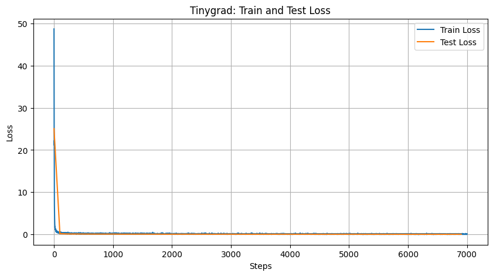

From tinygrad to PyTorch
PyTorch
tinygrad
MNIST
Training a tinygrad MNIST model and transferring the weights to PyTorch.
This is the second post of my series documenting my explorations with comparing PyTorch and tinygrad. Like the first post, From PyTorch to tinygrad, I will be using the simple model from tinygrad’s MNIST tutorial and a PyTorch version of the model that I wrote. The experiment in this post does the previous experiment the other way around (training the tinygrad model and transferring the resulting weights to the PyTorch model to see if the two models produce the same probabilities).
I have the models in two files, ‘tinygrad_MNIST_start.ipynb’ and ‘pytorch_MNIST_end.ipynb’. Below is a side-by-side comparison of the tinygrad and PyTorch code.
Device configuration
The device configuration is the same as the previous post.
For tinygrad, the default device is based on your system. In this case, it is METAL.
tinygrad
from tinygrad import Device
print(Device.DEFAULT)METAL
The default device for PyTorch is CPU, but since I am using an M2 Macbook Air, I switched it to MPS for acceleration.
PyTorch
import torch
if torch.backends.mps.is_available():
device = torch.device("mps")
else:
device = torch.device("cpu")
print(device)mps
Model
The model is the same as the previous post: a convolutional neural network with two convolutional layers and a linear layer. The convolutional layers have 32 and 64 filters, respectively. The linear layer has 10 output units, one for each digit.
The tinygrad model is a simple class. Instead of having a forward method, it instead uses a call method that functions like PyTorch’s forward method.
tinygrad
from tinygrad import Tensor, nn
class Model:
def __init__(self):
self.l1 = nn.Conv2d(1, 32, kernel_size=(3,3))
self.l2 = nn.Conv2d(32, 64, kernel_size=(3,3))
self.l3 = nn.Linear(1600, 10)
def __call__(self, x:Tensor) -> Tensor:
x = self.l1(x).relu().max_pool2d((2,2))
x = self.l2(x).relu().max_pool2d((2,2))
return self.l3(x.flatten(1).dropout(0.5))The PyTorch model inherits from nn.Module, which is a base class in PyTorch for creating models. It calls a forward method to apply the model to the input.
PyTorch
import torch.nn as nn
import torch.nn.functional as F
class Model(nn.Module):
def __init__(self):
super().__init__()
self.l1 = nn.Conv2d(1, 32, kernel_size=(3,3))
self.l2 = nn.Conv2d(32, 64, kernel_size=(3,3))
self.l3 = nn.Linear(1600, 10)
def forward(self, x):
x = F.max_pool2d(F.relu(self.l1(x)), (2,2))
x = F.max_pool2d(F.relu(self.l2(x)), (2,2))
return self.l3(F.dropout(x.flatten(1), 0.5, self.training))Get the MNIST dataset
Getting the MNIST dataset is the same as the previous post. To get the dataset, I used tinygrad’s mnist function for both models to keep things simple. I did have to convert the tinygrad tensors that were returned by the function into PyTorch tensors to use them in the PyTorch model.
tinygrad
from tinygrad.nn.datasets import mnist
X_train, Y_train, X_test, Y_test = mnist()
print(X_train.shape, X_train.dtype, Y_train.shape, Y_train.dtype)(60000, 1, 28, 28) dtypes.uchar (60000,) dtypes.uchar
PyTorch
from tinygrad.nn.datasets import mnist
X_train, Y_train, X_test, Y_test = mnist()
# Convert tinygrad Tensors to PyTorch tensors
X_train = torch.from_numpy(X_train.numpy()).float().reshape(-1, 1, 28, 28)
Y_train = torch.from_numpy(Y_train.numpy()).long()
X_test = torch.from_numpy(X_test.numpy()).float().reshape(-1, 1, 28, 28)
Y_test = torch.from_numpy(Y_test.numpy()).long()
print(X_train.shape, X_train.dtype, Y_train.shape, Y_train.dtype)torch.Size([60000, 1, 28, 28]) torch.float32 torch.Size([60000]) torch.int64
Use the model
The models are created and evaluated in the same way as the previous post. For the Pytorch version, I did have to first move the model and data to the device to ensure everything is on mps.
tinygrad
model = Model()
acc = (model(X_test).argmax(axis=1) == Y_test).mean()
print(acc.item()) 0.085999995470047
PyTorch
model = Model().to(device)
X_train = X_train.to(device)
Y_train = Y_train.to(device)
X_test = X_test.to(device)
Y_test = Y_test.to(device)
acc = (model(X_test).argmax(axis=1) == Y_test).float().mean()
print(acc.item()) 0.10029999911785126
tinygrad
The model is trained using the Adam optimizer and the sparse categorical cross entropy loss function. It is trained for 7000 steps and is evaluated on the test set after every 100 steps.
Train the model
It took 3 minutes and 31.9 seconds to train the model. This is much faster than the PyTorch model.
If I only use half of the training dataset, it runs just fine, completing training in 5 minutes and 5.6 seconds.
optim = nn.optim.Adam(nn.state.get_parameters(model))
batch_size = 128
def step():
Tensor.training = True # makes dropout work
samples = Tensor.randint(batch_size, high=X_train.shape[0])
X, Y = X_train[samples], Y_train[samples]
optim.zero_grad()
loss = model(X).sparse_categorical_crossentropy(Y).backward()
optim.step()
return lossfrom tinygrad import TinyJit
jit_step = TinyJit(step)train_losses = []
test_losses = []
train_accuracies = []
test_accuracies = []
for step in range(7000):
# Calculate train loss
loss = jit_step()
train_losses.append(loss.item())
if step%100 == 0:
Tensor.training = False # Disables dropout for evaluation
# Calculate train accuracy
#train_outputs = model(X_train)
#train_acc = (train_outputs.argmax(axis=1) == Y_train).mean().item()
#train_accuracies.append(train_acc)
# Calculate test accuracy
test_outputs = model(X_test)
test_acc = (test_outputs.argmax(axis=1) == Y_test).mean().item()
test_accuracies.append(test_acc)
# Calculate test loss
test_loss = test_outputs.sparse_categorical_crossentropy(Y_test).mean().item()
test_losses.append(test_loss)
#print(f"step {step:4d}, loss {loss.item():.2f}, train acc {train_acc*100.:.2f}%, test acc {test_acc*100.:.2f}%")
print(f"step {step:4d}, loss {loss.item():.2f}, test acc {test_acc*100.:.2f}%")step 0, loss 29.70, test acc 15.74%
step 100, loss 0.32, test acc 94.64%
step 200, loss 0.24, test acc 96.40%
step 300, loss 0.29, test acc 97.26%
…
step 6600, loss 0.02, test acc 98.94%
step 6700, loss 0.02, test acc 98.89%
step 6800, loss 0.11, test acc 98.80%
step 6900, loss 0.01, test acc 98.83%
Plot the loss
import matplotlib.pyplot as plt
plt.figure(figsize=(10, 5))
plt.plot(range(len(train_losses)), train_losses, label='Train Loss')
plt.plot(range(0, len(test_losses) * 100, 100), test_losses, label='Test Loss') # every 100 steps
plt.title('Tinygrad: Train and Test Loss')
plt.xlabel('Steps')
plt.ylabel('Loss')
plt.legend()
plt.grid(True)
plt.show()
Plot the accuracy
I’ve commented out the line plotting train_accuracies to still show the test accuracy.
When I used only half of the training dataset, I was able to produce a plot that looks very similar to the accuracy plot of the previous post.
plt.figure(figsize=(10, 5))
#plt.plot(range(0, len(train_accuracies) * 100, 100), train_accuracies, label='Train Accuracy')
plt.plot(range(0, len(test_accuracies) * 100, 100), test_accuracies, label='Test Accuracy')
plt.title('Tinygrad: Train and Test Accuracy')
plt.xlabel('Steps')
plt.ylabel('Accuracy')
plt.legend()
plt.grid(True)
plt.show()
Save the weights
To use the weights from the tinygrad model in the PyTorch model, I saved the weights as a NumPy array.
import numpy as np
tinygrad_weights = {
'l1.weight': model.l1.weight.numpy(),
'l1.bias': model.l1.bias.numpy(),
'l2.weight': model.l2.weight.numpy(),
'l2.bias': model.l2.bias.numpy(),
'l3.weight': model.l3.weight.numpy(),
'l3.bias': model.l3.bias.numpy()
}
np.save('tinygrad_weights.npy', tinygrad_weights)PyTorch
Use the tinygrad weights
Then, in my PyTorch model, I loaded the tinygrad weights and set them as the weights of the model.
import numpy as np
loaded_weights = np.load('tinygrad_weights.npy', allow_pickle=True).item()
model.l1.weight.data = torch.tensor(loaded_weights['l1.weight']).to(device)
model.l1.bias.data = torch.tensor(loaded_weights['l1.bias']).to(device)
model.l2.weight.data = torch.tensor(loaded_weights['l2.weight']).to(device)
model.l2.bias.data = torch.tensor(loaded_weights['l2.bias']).to(device)
model.l3.weight.data = torch.tensor(loaded_weights['l3.weight']).to(device)
model.l3.bias.data = torch.tensor(loaded_weights['l3.bias']).to(device)Final Probabilities
When comparing the probabilities produced by both models, we can see that they are very similar with negligible variations that can be attributed to floating-point precision differences.
tinygrad
test_image = X_test[0:1]
tinygrad_probs = model(test_image).softmax().numpy()
print("tinygrad probabilities:", tinygrad_probs)tinygrad probabilities: [[2.9119146e-10 2.2247503e-13 1.2900699e-08 1.1292180e-08 5.5392816e-15 2.1924421e-14 7.2358327e-19 1.0000000e+00 2.9422734e-12 5.7311561e-10]]
PyTorch
test_image = X_test[0:1]
model.eval()
with torch.no_grad():
pytorch_probs = F.softmax(model(test_image), dim=1).cpu().numpy()
print("PyTorch probabilities:", pytorch_probs)